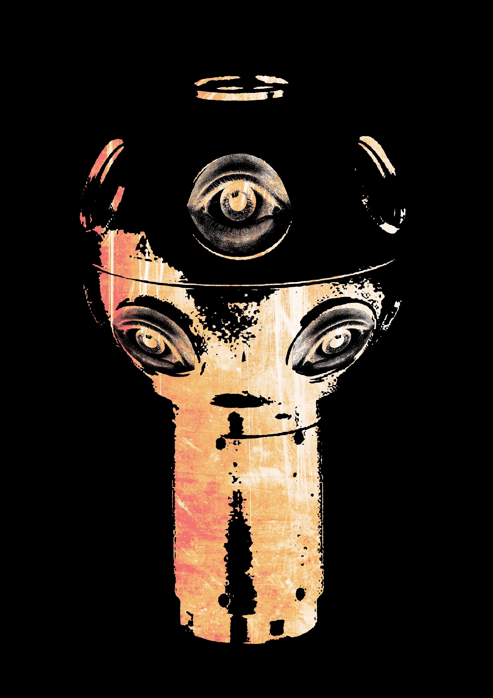
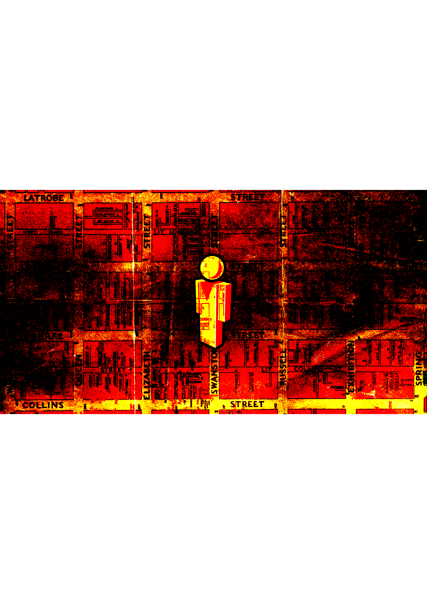
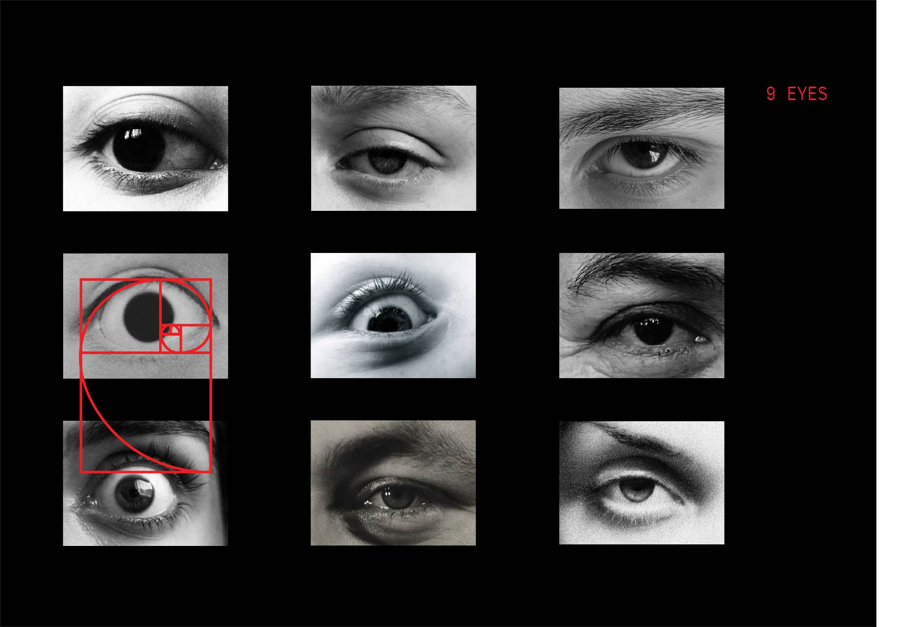
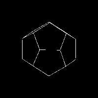

DESIGN THEORY INVESTIGATION — 2025
THE 9 EYES OF GOOGLE STREET VIEW
ALL SEEING & ALL KNOWING
THE BIRTH OF
AN EYE
// WHAT DOES IT MEAN FOR A MACHINE TO SEE?
In 2007, Google launched Street View, a project to photograph every [accessible] road on Earth. The camera rig parched on each vehicle carries nine lenses arranged in a ring, capturing a full 360° panoramic sphere with every frame. Nine eyes. Always open. Never blinking.
An initiative introduced by a billionaire corperation, requested by none. The dodecahedron-shaped panoramic camera (Immersive Media Dodeca 2360) captures candid, natural, human moments in time. A massive, undiscerning machine for image-making whose purpose is to simply capture everything. Street View takes photographs without apparent concern for ethics or aesthetics, from a supposedly neutral point of view.
Who has our information? Our data? Our DNA?
"To photograph is to appropriate the thing photographed." — Susan Sontag

THE FORM
& THE CAMERA
// SHADOWS ON THE WALL OF THE DIGITAL CAVE
THE FORM
OF THE GOOD
Plato's highest Form illuminates all others. The form of the good is the ultimate object of knowledge and the source of all reality, truth, and value. Because the soul can contemplate this eternal, unchanging Good, the soul is inherently divine and immortal.
DODECAHEDRAL
UNIVERSE
Twelve pentagons form a dodecahedron which Plato defined as 'a fifth construction, which the god used for embroidering the constellations on the whole heaven.'
THE WORLD
OF FORMS
If every physical thing is an imperfect copy of a perfect Form, what is Street View's photographic record? An even further copy — a copy of a copy. Or does its totality approach something transcendent? Perhaps it is harmony and the manifestation of God in nature.
How did Plato prove immortality?
Visible things are composite and subject to dissolution and death — and the body is of their number. Now, the soul can survey the invisible and unchanging and imperishable Forms, and by coming thus into contact with the Forms, the soul shows itself to be more like them than it is to visible and corporeal things, which latter are mortal. Moreover, from the fact that the soul is naturally destined to rule the body, it appears to be more like the divine than the mortal. The soul, as we may think, is “divine”. Consider discussing: the nature of visual representation, the difference between the map and the territory, whether Google's data constitutes a Platonic ideal of physical space, and the epistemological implications of a machine that has seen more of the world than any human being ever could.

Fig.1 The ghost that haunts the streets
ANCIENT
SIGHT
// THE ALL-SEEING EYE ACROSS MYTH, RELIGION & MAGIC

FIG 2. PENTAGRAM IN KAZAKHSTAN CAPTURED BY GOOGLE EARTH
THE EYE OF RA
In ancient Egypt, the eye was an independent deity, a force of divine surveillance and cosmic order. The 9-lens dodecahedral camera represents the universe through solar, omnidirectional vision. 9 Eyes of Ra that surveil the streets are nothing less of all seeing and all knowing from the cosmos to the streets we exist.
The wicker man
The Wicker Man in pagan folklore is a towering figure woven from branches and straw, its presence holds omnidirectional gaze, silently watching from every angle. The 9 eyes act as a modern Wicker Man, transforming surveillance into ritual, capturing humanity within an all-seeing structure that observes the streets with an eerie, inescapable awareness.
PAGAN SIGHT
Modern paganism, in its many forms, is deeply intertwined with the Earth, often treating the natural world as a sacred, living entity beyond than just a collection of resources. As the street-view camera collects these resources and data, it merely captures the earth in its beauty and divinity. An approach rooted in paganism and romanticism.
THE THIRD EYE
In pagan traditions, the eye was a sacred symbol of divine knowledge, a ward against the unseen and a channel to higher planes. The third Eye represented spiritual sight beyond human perception, a contemporary surveillance aesthetic where omnipresent cameras mimic an all-seeing force that constantly watches, records and interprets human existence.

ALL SEEING
ALL KNOWING
// CAN A CORPORATION POSSESS DIVINE OMNISCIENCE?
THE PANOPTICON
Jeremy Bentham's Panopticon — the prison where all inmates can be watched at any time, whether or not they are being watched. Foucault's reading: the panoptic gaze internalises surveillance until the watched becomes their own watcher. Google Street View is a planetary panopticon, dispersing this gaze across streets, homes, and thresholds so that everyday life is quietly performed under an omnipresent, detached eye that never sleeps, only records.
// FIG.3 DIAGRAM OF THE PANOPTICON, 1791
THE NINE AS DEITY
Nine is a sacred number across many traditions — Norse (nine worlds), Egyptian (Ennead), Buddhist (nine consciousnesses). Is the choice of nine lenses coincidental — or does it echo something older, something cosmological?
DATA AS SOUL
Every image contains a person's face, a licence plate, a private moment. Once captured, it is indexed, processed, stored. Does Google possess something of the soul of every person it photographs?
“The relationship between those who are constantly watched and tracked and those who watch and track them is the relationship between masters and slaves.”
— Chris Hedges, “Our Only Hope Will Come Through Rebellion” 2014
